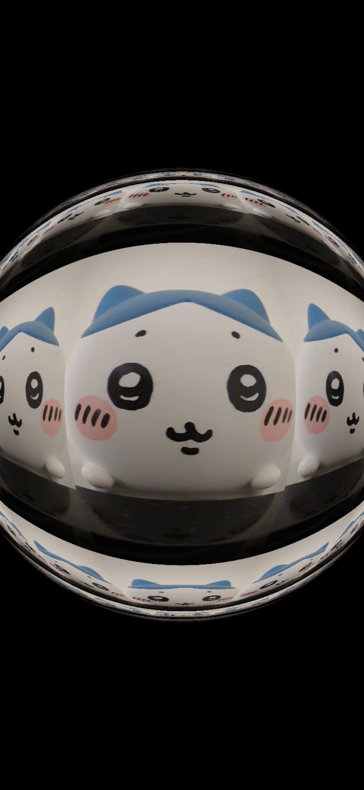
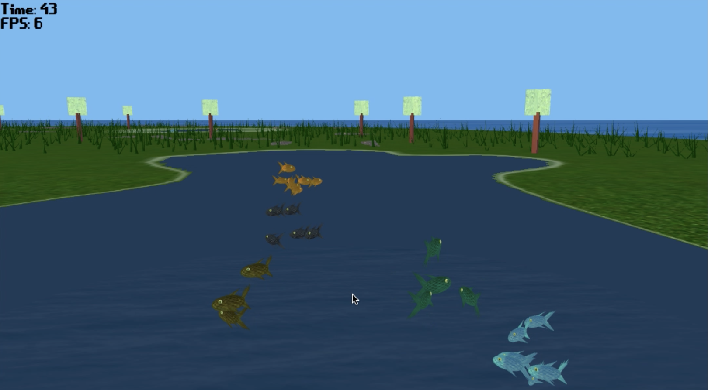

Created AR filters, interactive visual effects, and post-editing UI components for mobile camera and editing apps, combining visual polish with real-time constraints, shader-based effects, and designer-facing implementation workflows.
I’m interested in the small, specific details that make people, places, and experiences feel alive. I use technology as a creative medium to build visual worlds, interactive systems, AR effects, front-end interfaces, and graphics-driven projects.
Selected Works
Technical Art

Created AR filters, interactive visual effects, and post-editing UI components for mobile camera and editing apps, combining visual polish with real-time constraints, shader-based effects, and designer-facing implementation workflows.

Built a browser-based 3D animated simulation with an explorable island environment, dynamic creature movement, particle atmosphere, shader-driven visuals, and first-person interaction.

Developed a 2D arcade driving game with object-oriented systems for movement, enemies, obstacles, projectiles, collectibles, collisions, and level progression.